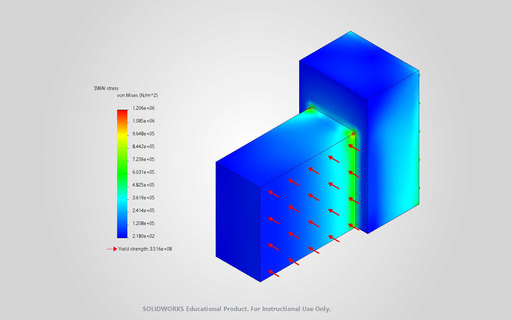

Editable parts
Describe a component, then inspect its sketches, dimensions and features in SOLIDWORKS. The model stays editable.
Describe a part or rigid assembly, review the plan, and save editable CAD files in your local SOLIDWORKS session.
Illustrative prompts
Hey Gage, can we…
Requires Codex access and a local SOLIDWORKS installation.
Explore models, motion replays, drawings, and a static study from the factory inspection project.
Start with a small CAD task. Review the geometry, saved files and exports before using the result.
Describe a component, then inspect its sketches, dimensions and features in SOLIDWORKS. The model stays editable.

The preview covers tested rigid assembly workflows, including a nested assembly build and a child depth edit. Use copies of any files you want to test.

The 100 N gripper jaw study is a linear static example. The preview also includes selected nonlinear and modal part studies.
ⓘ CAD and simulation operations require compatible local software and licenses. Review the proposed operation and its result in your CAD environment.
Explore the intended steps for three factory tasks. These are interactive illustrations, not live CAD commands.
“Design a conveyor bracket with two mounting slots.”
Gage brings a Codex-driven workflow to a local SOLIDWORKS setup. Inspect models in SOLIDWORKS and review the scope of each operation before relying on the result.
How does usage work? ↗Gage uses Codex usage. A normal ChatGPT conversation does not provide unlimited CAD automation.
Work with an existing compatible installation and the licenses required by the workflow. Inspect generated models in your CAD environment.
Sign in through the supported Codex flow. This website does not collect AI credentials or execute CAD commands.
Bring a part or assembly you’d like to build in SOLIDWORKS. Share your time zone and a few times that work for you.
I’m Andrew Mombay, the founder and developer of Gage. I study Mechanical Engineering (B.Sc.) and Business Economics (B.A.) at Brown University, and hold an Associate of Arts and Sciences from Carroll Community College.
I’m an Industrial Digital Strategist Intern at Siemens Digital Industries Software and Co-Founder & CEO of Vastro, where I work on VR-controlled robotics. Gage brings those interests in mechanical design, software, and product development into a tool I use and test in SOLIDWORKS.
Gage is an independent project. These education and employment details do not imply endorsement by Brown University, Siemens or Carroll Community College.
View Andrew’s LinkedIn profile
Founder & developer, Gage
Gage is an independent AI CAD agent project built by engineers for engineers. Its aim is to translate natural-language design intent into real CAD operations—from parts and assemblies to supported simulation workflows.
Yes. The preview can create editable parts in SOLIDWORKS and change dimensions in an existing design. Available features depend on the version being tested.
The preview has built rigid nested assemblies and reopened them with the expected component hierarchy and placement. Moving mechanisms and broader mate combinations are still being tested.
Simulation remains experimental. Verified part studies include linear static, nonlinear bonded contact on a two-body part, and modal time history with 40 modes and 40 time steps. Nonlinear assembly contact and in-panel saved-result readback remain unverified.
Gage uses Codex usage. Your normal ChatGPT conversations do not provide unlimited CAD automation. Access and usage limits follow your configured Codex workflow. This website has no account sign-in and does not collect AI credentials.
No public installer is available. The unsigned SOLIDWORKS 2026 preview is for invited testing. Code signing and acceptance testing on an independent clean Windows machine are pending. Use disposable copies for preview testing. Recovery from a crash during a native save remains unverified. Request a demo or early access by email.
Gage is being developed with SOLIDWORKS-oriented workflows first. Broader CAD support is a possible future direction, but no additional compatibility has been announced.
No. The goal is to offload repetitive modeling and study-setup tasks while keeping engineering decisions, reviews, and verification with a human. Generated geometry and simulation outputs must be checked before use.
Complete the early access request and share the CAD tools or workflows you're interested in. Gage is still in development; interest does not guarantee selection or a launch date.
No. Gage is an independent project and is not sponsored by, endorsed by, or affiliated with OpenAI, Dassault Systèmes, or SOLIDWORKS. Product and brand names are used only to describe possible technical integrations.
Ask for a walkthrough, share a workflow to test, or send a question. Demo times are agreed by email.